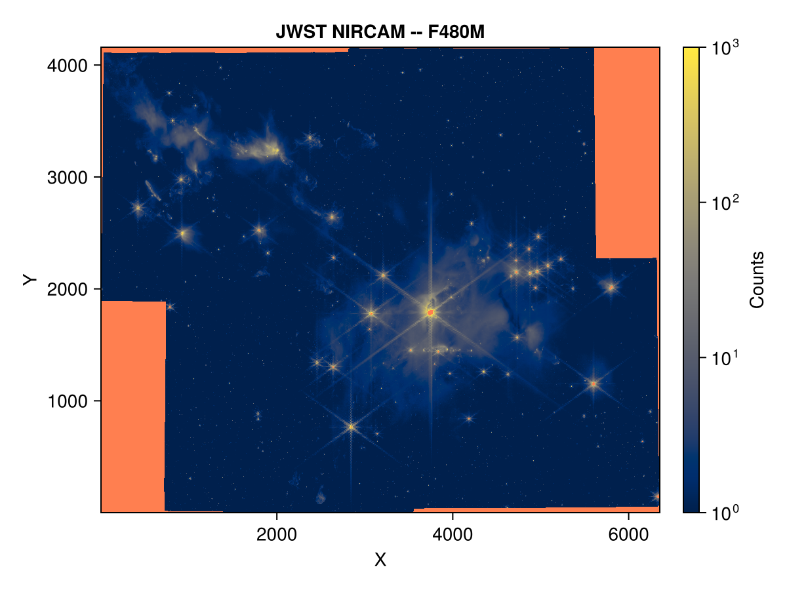

JWST
Adapted from ADASS 2024 workshop.
In this example, we show how to use ASDF.jl to load and view some astronomical data taken from the James Webb Space Telescope (JWST).
The sample data for this example can be downloaded here from the data repository of the Space Telescope Science Institute (STScI). Note: it is a moderately large file (~100 MB).
Load
using ASDF, Downloads
fpath = let
filename = joinpath(mkpath(pkgdir(ASDF, "data")), "jwst.asdf")
url = "https://data.science.stsci.edu/redirect/Roman/Roman_Data_Workshop/ADASS2024/jwst.asdf"
isfile(filename) || Downloads.download(url, filename)
filename
end
af = load(fpath; extensions = true)jwst.asdf
├─ asdf_library::TaggedMapping
│ ├─ author::String | The ASDF Developers
│ ├─ homepage::String | http://github.com/asdf-format/asdf
│ ├─ name::String | asdf
│ └─ version::String | 3.2.0
├─ history::OrderedDict
│ └─ extensions::Vector{TaggedMapping} | shape = (6,)
├─ _fits_hash::String | 93cf4256596bd7a6d20913c3d0f6e1ab9d3a8647c02771c5c752b2311efd9456
├─ data::NDArray | shape = [4159, 6353], datatype = Float32
└─ meta::OrderedDict
├─ aperture::OrderedDict
│ ├─ name::String | NRCA5_FULL
│ ├─ position_angle::Float64 | 251.53592358473648
│ └─ pps_name::String | NRCALL_FULL
├─ asn::OrderedDict
│ ├─ exptype::String | science
│ ├─ pool_name::String | jw01611_20240910t150659_pool.csv
│ └─ table_name::String | jw01611-o002_20240910t150659_image3_00001_asn.json
├─ background::OrderedDict
⋮ (325) more rows
Plot
using CairoMakie
img_sci = let
img = af["data"][]
img[img .< 0] .= 1
img
end
telescope = af["meta"]["telescope"]
instr = af["meta"]["instrument"]["name"]
filt = af["meta"]["instrument"]["filter"]
fig, ax, hm = heatmap(img_sci;
axis = (;
xlabel = "X",
ylabel = "Y",
title = "$(telescope) $(instr) -- $(filt)",
),
colorrange = (1, 1e3),
colorscale = log10,
colormap = :cividis,
nan_color = :coral,
)
Colorbar(fig[1, 2], hm; label = "Counts")
fig
By default, Makie.jl places the origin in the lower left corner and transposes the data, matching the convention used in the Python workshop example. To have the plot orientation match the data orientation instead, modify the above plot command to: heatmap(img_sci'; axis = (; yreversed = true)). See also permutedims for a more general alternative to the adjoint (conjugate transpose) operation: '.